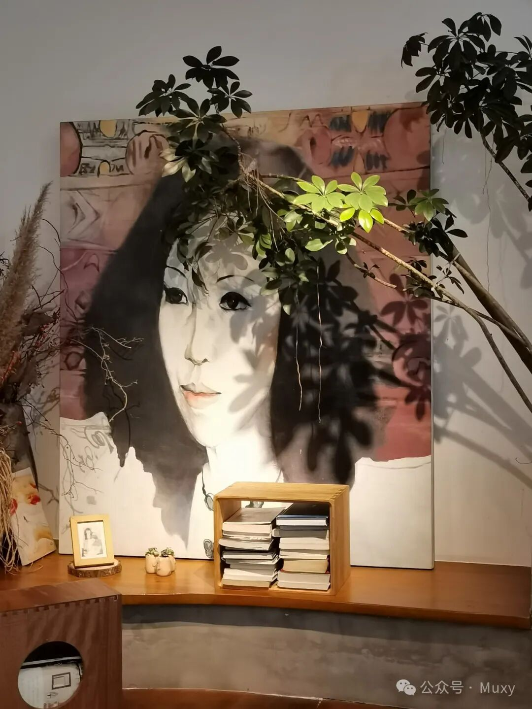
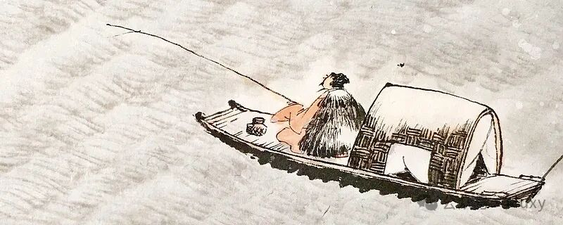

江洋大盗
原谅我用三毛的散文开头:
江洋大盗
三毛
说起来我们陈家，因为得自先祖父陈公宗绪的庇荫，世世代代书香门第，忠厚传家。家产不多，家教可是富可敌国。
我们的家谱“永春堂”里，不但记载子孙人数，帐房先生更是忠心耿耿，每年各房子弟的道德品行收入支出更是一笔一划写得清清楚楚。
我生长在这样一个家庭里，照理说应该是人人必争，家家必买的童养媳，其实不然。这拿《圣经》上的话来说，就是——我的父母是葡萄树，我却不是枝子。拿我自己的话来说，就是——算命先生算八卦，一算算到中指甲——我这个败家女，就这样把家产一甲两甲的给败掉了。
自我出生以来，我一直有个很大的秘密，牢牢的锁在我的心里，学会讲话之后，更是守口如瓶，连自己的亲生父母，也给他们来个不认帐，不透露半点口风。
我有什么不可告人的事情，使得我这么神秘呢？我现在讲给你一个人听，你可别去转告张三李四，就算你穷不住了，出卖了我这份情报，我这样一个只有三毛钱的小人物，你也卖不出好价钱来的。
我再说，自我出生以来，就明白了我个人的真相，我虽然在表面上看去，并不比一般人长得难看或不相同，其实不然透了。
“我——是——假——的。”我不但是假的，里面还是空的，不但是空的，我空得连幅壁画都没有。我没有脑筋，没有心肠，没有胆子，没有骨气，是个真真的大洞口。
再拿个比方来说，我就像那些可怕的外星人一样，他们坐了飞盘子，悄悄地降落在地球上，鬼混在这一批幸福的人群里面，过着美满的生活，如果你没有魔眼，没有道行，这种外星人，你是看他们不出，捉他们不到的。
我，就是这其中的一个。
我并不喜欢做空心的人，因为里面空荡荡的，老是站不住，风一吹，旁人无意间一碰，或是一枝小树枝拂了我，我就毫无办法的跌倒在地上，爬也爬不起来。
我自小到十四岁，老是跌来跌去，摔得鼻青眼肿，别人看了老是笑我，我别的没有，泪腺和脾气倒是很争气，只是一跌，它们就来给我撑面子。
十四年来，我左思右想，这样下去，不到二十岁，大概也要给跌死了，如果不想早死，只有另想救命的法子。
我干什么才好呢？想来想去，只有学学那批不要脸的小日本邻居们——做小偷。
这个世界上那么大，又那么挤，别人现成的东西多得是，我东摸一把，西偷一点，填在我的空洞洞里，日子久了，不就成了吗？
这决定一下，我就先去给照了一张X光片子。
医生看了一下，说：“是真空的，居然活了十四年，可敬之至。”
我唰一顺手抽了那张空片子，逃回家来，将它塞到床下面去存档案。
二十年后再去照它一张，且看看到时候将是不是一条货真价实的好汉。
我因为没有心，没有胆子，所以意志一向很薄弱，想当小偷的事是日本人给的灵感，却没有真正的去进行过，任着自己度着漫无目的的岁月。
有一年，街坊邻居们推举我们家做中山区的模范家庭，区公所的人自然早已认识我父母亲的为人，但是他们很仔细，又拿了簿子来家里查问一番。
问来问去，我们都很模范，眼看已快及格了，不巧我那时经过客厅，给那位先生看到了。他好奇的问我母亲：“咦，今天不是星期天，你的女儿怎么不上学呀？”
我母亲很保护我的说：“我这女儿身体不好，休学在家。”他又问：“生什么病啊？看上去胖胖的啊？”
母亲说：“生的是器官蜂巢状空洞症，目前还没有药可医，很令人头痛。”
那次模范家庭的提名，竟因为我生了这种怪病，我们全家都被淘汰下来。那位先生说得了不治之症的人，是不好做旁人的榜样的。
那夜我静静的躺在黑暗里，眼角渗出丝丝的泪来。我立志做小偷的事，也在那种心情之下打好了基础。
说起世上的偷儿来，百分之一百是贪心势利、六亲不认的家伙。我当年虽然没有拜师，悄悄出道，这个道理不用人教，却也弄得清楚明白。
我东张西望，眼睛不放过家里一桌一椅，最后停留在我亲生父母身上，要实习做偷儿，先拿他们来下手，被捉到了也好办些，不会真正交给警察局。
我仔细的打量打量这两个假定受害人。他们为人方正本分，对自己刻苦、谨严，对旁人宽厚怜悯，做事情负责认真，对子女鞠躬尽瘁，不说人长短，不自夸骄傲，不自卑，不自怜，积债不会讨，付钱一向多付——我从来没有好好计算过自己父母大人，今儿这么细细一看，他们这两位除了外表风度神采还对付得过去之外，这里面那些东西，可早已过时啦！不时兴的渣子啦！别人不要的东西，他们却拿来当珍珠宝贝啦！再加上几十年前碰到一个“基度山大伯爵”之后，这两个人变得越来越傻，愚不可及，连我这空心人，要偷偷他们可也真没有什么好处。想想偷儿就算实习阶段，这两个傻子可也不值得一试，不偷，不偷。
出门去打了一个圈子，空心人饿了十四年，头重脚轻，路都走不稳，这一累，摸着墙爬回家来，不再考虑，趁着父母大人在午睡，就把他们那点不可口的东西，拿来塞了下去，消不消化我可不在乎，先填了这个蜂巢似的大洞洞再做打算。偷了自己父母，不动声色，眼看案子没发，看准姐姐，拿她给吃下去，做下一个受害者。
这个女娃儿，大不了偷儿两三岁，温柔敦厚，念书有耐性，对人有礼貌，冬天骑车上学不叫冷，高中住校吃大锅饭不翻胃，两只瘦手指，指甲油不会涂，弹钢琴、拉小提琴却总也不厌——我将她翻来覆去看，又是一个傻瓜。
请你学音乐，就是要你做歌星赚大钱，你怎么古典来古典去，鼻子不去垫高，头发不去染黄，你这一套不时髦，不流行，我想来想去不爱偷，看在自己人的份上，吃下你一点点，心里可是不甘心不情愿。
案子既然是在家里做开的，只好公平一点，给它每个人都做下一点，免得将来案发了不好看。大弟弟我本来是绝对不敢去偷他的，他是花斑大老虎兼小气鬼，发起脾气来老是咬人的脚，我一旦偷他还了得吗？先不给他咬死也算运气了。
有这么一天，老虎回来了，走路一跛一拐，长裤子盖着老虎脚，也看不出有什么不对。等老虎吃完饭，怕热，脱了长裤看电视，这一望，了不得，空心人尖声大叫，招来全家大小争看老虎。
这只花斑大虎，从爪子到膝盖，都给皮肉翻身，上面还给武松缝上了一大排绳子哪。
空心人蹲下来，一声一声轻数虎爪上的整齐针线，老虎大吼一声：“看个鬼啊！我跌破了皮，你当我是怪物？”
空心人灵机一动，一吼之间，老虎胆给偷吸过来了，这傻畜牲还不知不觉，空心人背向失胆者，嘿嘿偷笑不已。
再说，老虎也是小气鬼，小气鬼者，你丢我捡也。
空心偷儿流鼻涕，向老虎要卫生纸，他老给半张。偷儿半夜开大灯偷颜如玉，他给送支小蜡炬进来好做案。姐夫请吃统一牛排，这只饥饿的虎居然说：“我不吃牛排，我吃钞票，你请喂我现款最实惠。”
你说这只陈家虎，小气鬼，是真的吧！他又是个假的。
永康街那个职业乞丐，你且去问问看，这好多年来，是不是有只花毛大虎爪，老是五十一百的塞了他去吃牛肉面？这一只宝宝，真是又傻又假，纸老虎也。
偷儿偷了他那么一点点仁心仁术，节俭实在，也真没高了多少道行。亏本亏得很大。
小弟弟，本是一代豪杰，值得一偷。
没想偷儿不看牢地，这师大附中的“良心红茶”给他打球口渴时喝多了，别的倒也没什么，肚子里一些好东西，都给这红茶冲来冲去就给良心掉了。
看我这个弟弟，“排座次”是倒数第一，论英雄可是文的一手，武的一手。
他，操守、品格、性情、学识，样样不缺，外表相貌堂堂，内心方方正正。这还不算，乒乓、撞球、桥牌，杀得敌人落花流水，看得空心姐姐兴奋落泪。
空心偷儿静待此弟慢慢长成，给他偷个昏天黑地。
这个幺弟，父亲花了大钱，请他继承父志，就是希望他吐出“良心良茶”，将这吹牛、拍马、势利、钻营、谄媚、诈欺这些大大流行，而老子当年没赶上的东西，给去用功念来，好好大显身手光宗耀祖一番。
不巧幺弟交友不慎，引上歧途。
厚黑学，他不修；登龙术，他不练；学业已竟，大器未成也，呜呼。
这是幺傻！幺傻！
偷儿看看这个毛毛，一无可偷，叹了口气，还是出去做案子吧！
偷儿全家可是傻门忠烈，学不到什么高来高去的功夫，罢也！罢也！
出了家门，独行侠东家一转，西家一混，六亲不认，好友照偷，这才发觉，家外世界何其之大，可偷之物何其之多，偷儿得意满志，忙得不亦乐乎。
《白云堂》给她偷山换水，邵大师给她一园芳草花卉、虫鱼飞鸟一网兜收。《制乐小集》难得赶集，偷儿却也食了他们一大包豆芽菜。《台北人》旅行美国，偷儿啃下他现代文学。祝老夫子打一个瞌睡，英诗放在袋里叮叮当当逃着跑。天文台蔡先生不留意，星星月亮偷来照贼路。“五月画会”“七月不会”时，斑斑点点，方块线条，生吞活剥硬“会”下去。诗人方莘正——《睡眠在大风上》，偷儿在去年的夏天拨开丛丛的水柳去找林达。惠特曼的头发长得成了他坟上的青草，一个不会吹口哨的少年轻轻给他理一理。荷马瞎了眼睛唱歌，你可别告诉旁人是谁偷了他的灵魂之窗。伊索原来就是奴隶，我吃了他的肉，可不是那只蛤蟆。沙林杰在麦田里捕来捕去，怎也捕不到我这宝贝。海明威你现在不杀他，他将来自己也杀自己。
毕卡索的马戏班，高更的黑妞，塞尚的苹果，梵谷的向日葵，全给偷儿在草地上一早餐给吃了下肚——达立的软表偷来做案更精确。《卡拉马助夫兄弟们》全给一个一个偷上床。《猎人日记》是偷儿又一章，只有《罪与罚》，做贼心虚，碰也不肯去碰它。
你问，你这个偷儿专偷文人，都是又穷又酸的东西，要它来干嘛？
不然，不然，你可别小看了偷儿，这些地粮只是拿来塞塞肚子的，真正好东西还在后头哪——。
几年下来，偷儿积案如山，已成红花大侠。一日里，偷了中华机票，拜别父母兄弟，飘洋过海，向这花花世界、万丈红尘里舍命奔去。
“天啊！江洋大盗来啦！”
喊声震天，偷儿嘿嘿冷笑不已。
不巧，一日偷儿做案路过米国，米国处处玉米丰收，偷儿吃得不亦乐乎。突然玉米田里冒出一个同道，偷儿独行红花侠，初见同行，慌忙双手送上米花一大把，这个同道看了哈哈大笑：
“偷吃的不算好汉！猪也！”
“不偷吃，偷什么？本人空心贼，全得吃下去才好。”
“你千辛万苦来了米国，如何不偷它一个博士？”“博士有什么用处？吃起来是咸是甜？”
“非也，博士不是食物也。”
“不可吃，不是我的路子，不偷也罢。”
偷儿冷眼一看同行，偷得面黄饥瘦，身上却背了一个大包袱。
“里面放的是‘博士’吗？你做什么不吃它。”“你这猪只知偷吃，真不知博士好处？”
“不知，请多指教。”
“这博士偷来是辛酸血泪，到手了可有好处——最起码的也还可以将它换个如花似玉的‘赔’嫁夫人也。懂了吧！”偷儿四处一张望，轻声告诉同行后：“鄙人是空心贼，不下肚的东西，背着嫌重，是夫人也不换道，谢谢哥哥指导，他日再见吧！”
告别玉米田，偷儿飞向三千里路云和月。
台北家人黄梁一梦，偷儿却已做下弥天大案。
她，偷西班牙人的唐吉珂德，偷法国人蒙娜丽莎的微笑，偷德国人的方脑袋黑面包，偷英国人的雨伞和架子，偷白人的防晒油，偷红人的头皮，偷黑人的牙膏——真是无人不偷，无所不偷。
当心江洋大盗独行红花侠啊——你看这只被叫猪的偷儿，吃得肥头胀脑，行动困难，想来可以不等个二十年，就再去照照片子，看看敢情可是不是条真好汉了。
不然，不然，偷儿心里明明白白，空心人，最重要的好东西还没有吃下去，不能洗手不干啊——有这么一日，大盗东奔西跑，挤在人群里辛苦工作，恰好看见前面有这么一条好汉施施然而来，茫茫人海，踏破铁鞋，终于给碰上了。
偷儿大盗红花独行侠，这眼睛一亮，追上去将那人在灯火阑珊处硬给捉到，拖来墙角腥风血雨给他活活吞食下去。这一填满肚子，兴奋得眼泪双流。
二十年辛苦，今日这才成了正果，阿弥陀佛。
你看看这成了正果的大圣吃下什么好东西——“无耻，虚伪，自私，贪心，懦弱，肤浅，无情，无义，狼心，狗肺——。”这一高兴，叫了计程车，直奔医院，挂紧急号，请照X光片子，看看这成了条什么血气男子。
空心人这下才有脸见见天日。
医生一看片子，连叫：“不好，不好。”
空心人面色一白，轻问：“怎么个不好？”
“怎么个都好，就是你刚刚吃下什么东西，烂得你五官六脏臭气薰天，快，快，护士小姐，预备开刀房，救人一命——。”偷儿大叫：“刚刚吃下去的是好东西，不要给掏出来啊！意志不自由，不签字，不开刀啊——。”
偷儿再叫再求，头上中了金针一灸，不省人事。
这偷儿，被医生掏光多年寻求刚刚吃下去的宝物，醒来就号啕大哭，丧心病狂，奔去天国，向上帝告状。上帝看见这九十九只羊之外的一只，竟然自己奔回来了，大喜过望，捉住了小黑羊儿放在栏中，再也不放手了。两年的时光，短促得如同一声叹息，这只羊儿左思右想，岂能永远这样躺卧在青草地上，被领在可安歇的水边了此残生？不甘心，不甘心，且等浪子回头，东山再起。
有一日，上帝数羊儿数睡了。偷儿一看时机到也、怀中掏出一块试金石，东试试，西试试，这次案子给它做得漂亮一点——偷它一粒金子做的心。
不巧刚得手，上帝就醒来了，他大喝一声——：“三毛，三毛，你平日在我的园子里偷吃烂果子，我也不罚你了，现在居然做出这样的事来——。”
偷儿吓得跪了下去，对上帝说：“我没有偷吃苹果，我知道那是你留给牛顿的。”
上帝说：“偷心也是不好的，我每个人都只分了一个心，你怎好拿两个？”
我说：“我不是偷了就算了，我把自己这颗碎过的心用浆糊粘好了，换给这个人。”
上帝听了摇头叹息，说：“一个是傻瓜，一个是骗子，我不要再看见你们，都给我滚出园子去。”
偷儿一吓，再跪哭问：“要给滚去哪里？”
上帝沉吟了一下，说：“出于尘土，归于尘土，你给我回到地球上的泥巴里打滚去。”
偷儿一听，再哭，哀哀伏地不肯起，说道：“那个地方，你久不去察看，早已满布豺狼虎豹，四处漫游，强食弱肉，我怎好下界去送死？”
上帝毕竟是有恩惠慈爱的，他对我一抬手，说：“孩子，起来，我告诉你要去的好地方——。”
偷儿静听了天父的话，悲喜交织，伏地拜了四大拜，快步去池塘里喝足了清水，把身上碧绿的芭蕉叶披风盖盖好，挟着《换心人》，高歌着————久为簪组束，幸此南荑遂，闲依木仍邻，偶似沙漠客，晓耕翻露土，夜傍尚屋羊，来往不逢人，长歌楚天黄——就这样头也不回的往撒哈拉大漠奔去。
第一次读到这篇文字我还在读初中，当时竟有种想落泪的冲动。彼时我还以文学爱好者自称，手里拿着的也常是《日瓦戈医生》、《闲情偶寄》、《不能承受的生命之轻》之流，高谈阔论，指点江山，粪土功名。
如此高傲，在学校绝非好学生，逃课，打架，样样精通，在当时那个管理严格，放学时豪车云集的私立初中，简直是个另类。
当时的我，觉得自己好像另一个三毛。恰巧，我的家乡也正是三毛的出生地。我想去流浪，想要自由，终点不一定是撒哈拉沙漠，但一定不是教室里的日复一日。

我最终还是没勇气逃离。
初中时跟我一起逃学的同桌，后来连学校也不来，跑去给人打工、洗头，后来她高中休学一年，今年下半年就要去韩国留学。很少有人理解她们的选择，可我觉得至始至终她们的生活都比我开心快乐。
大盗比侠，少几分豪气，偷偷摸摸总不成体统。但又比小偷多几分洒脱、坦荡。用贾科长的镜头语言来说，小武是盗，靳小勇是偷。我是个爱偷偷过自己生活的人，做不成侠，在自己的世界里装个江洋大盗，也还剩几分侠气。
**有人在自己的世界里做侠客，有人在别人的世界里当跑堂。再光鲜亮丽，不过走个过场。 **

如今我在一所可以说不赖的大学，读着我还算感兴趣的专业，做着不讨厌的事，也不错。但有些情怀，有些岁月，已经“转身浪影汹涌没红尘”。这里，就用来记录那些浪潮过去后，偶然浮现的浪花。毕竟，东隅已逝，桑榆非晚。